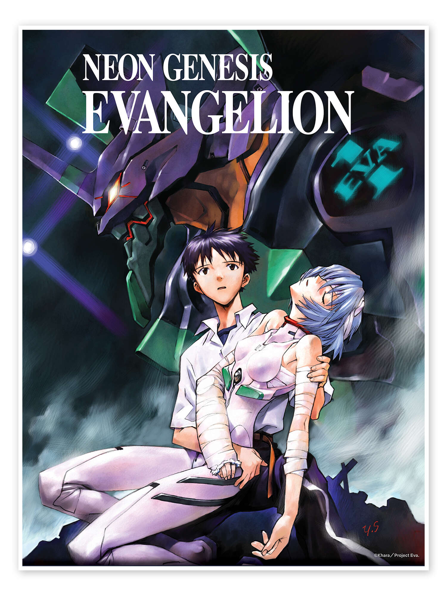

Neon Genesis Evangelion is one of my favourite animated series due to its psychological depth, complex characters, and exploration of identity, emotion, and human vulnerability.
The series stands out for its ability to blend action, philosophy, and emotional storytelling. Its themes of internal struggle and personal growth strongly resonate with my own mindset and creative interests.